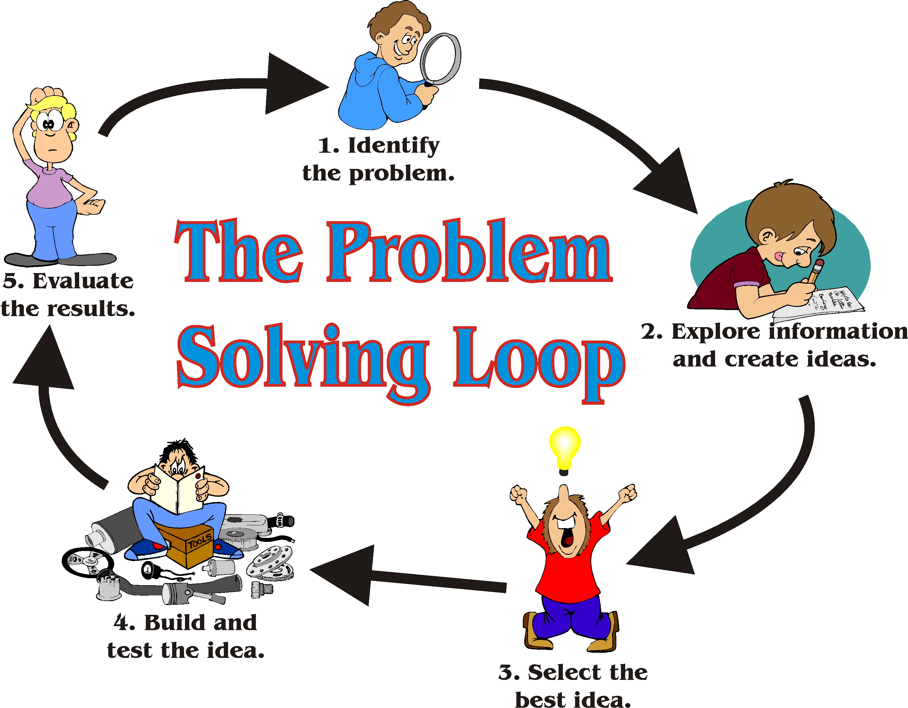
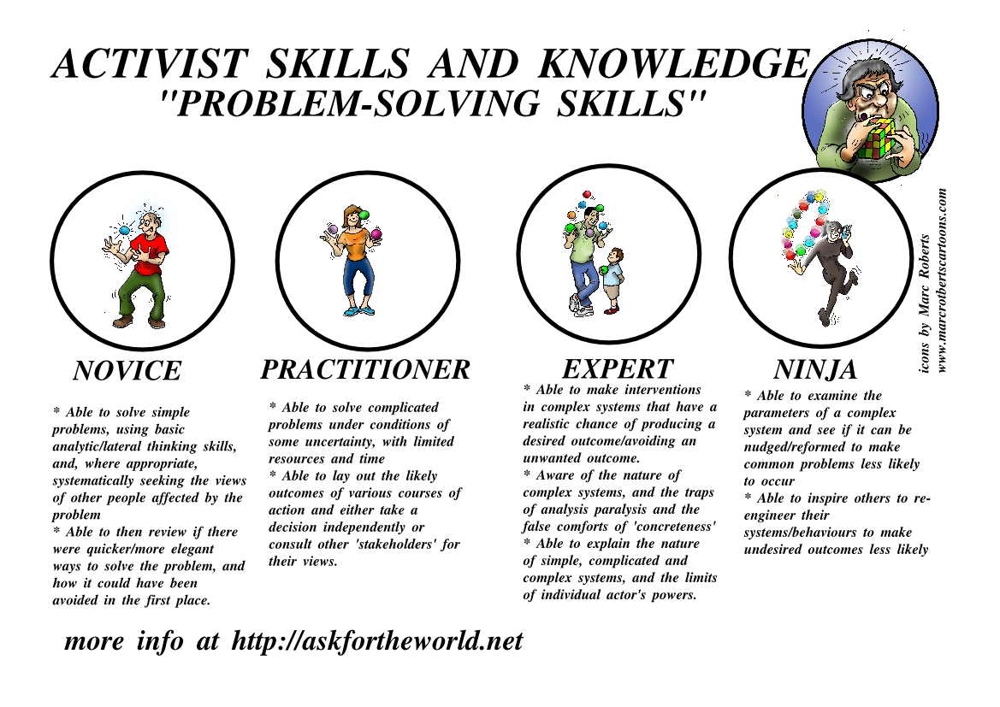

Conflict is at the crux of every story and will arise when different priorities are weighed in every decision. How we deal with conflict defines who we are as people. People can spout morals but you can not speak louder than with actions. People can have all the skills in the world but when they can not be applied due to a lack of teamwork or a faltering of mentality, those skills can mean nothing. The other week, I missed a friend's party and broke my word. I both forgot about the party and decided not to drive the hour back from LA when I had just arrived to watch some World Cup with other close friends that I did not know if I would be able to see again before leaving for San Fransisco. Needless to say, I felt some shame and regret but wanted to move past it. My initial reaction which is a habit was to withdraw and avoid. I indulged in avoidance while my friend, over text, seemed so far. Since, he hasn't returned my texts and I would like to examine what I could have done better and what I can do now to resolve this ongoing conflict. Most conflict resolution

Root Cause analysis Heuristic
